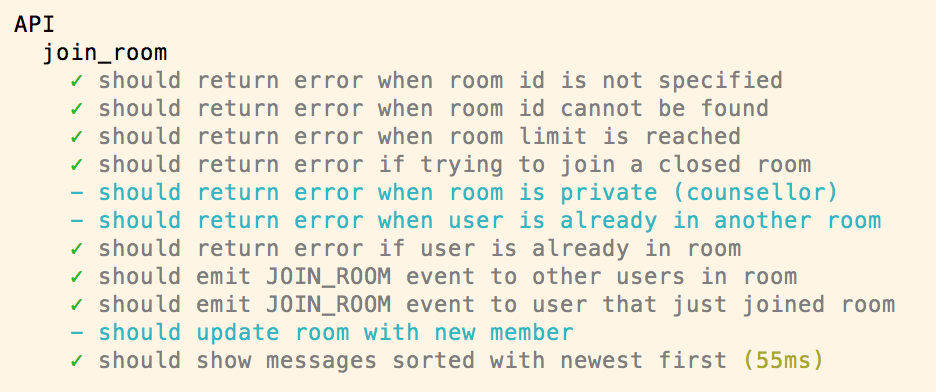

This is a series of posts for my CS3216 project, you can find the original post here.
If you’re a CS3216 student reading this post, your first thought might be “TDD, are you insane? No one’s got time for that!”
If you are a TA for CS3216, you might be laughing at me: “This guy wasted his time writing tests?”
Or maybe I’m being overly skeptical. But it’s hard not to incite strong opinions when talking about a topic as controversial as TDD.
First, some stats:
$ find src -name '*.js' | xargs wc -l
...
1006 total
$ find test -name '*.js' | xargs wc -l
...
1423 totalI actually have more lines of test code than actual code!
And if you actually clone the repo and run tests, you can see that some tests are not even implemented…
So why test? Is it worth the time? For me, it’s a clear yes, but let me try to convince you.
Show that things work
When your tests are green, it means that your code works according to your expectation.
Note that this is different from saying that your code is correct, tests only ensure that your code works according to what your tests says.
And it’s easy for you to run tests! For me it’s just a single command:
npm run testTests as TODO
The test runner I am using, mocha, allows test to be defined and marked as pending, which shows up differently in your tests results and will not fail your entire test suite:

This serves as a good reminder of what I need to implement, and conveniently breaks down the join_room feature into small, manageable chunks, that can be implemented one at a time.
Confident iteration
CS3216 gives you very little time to do your project. You have not much time to think, very little time to execute, and a lot of pressure to build something usable.
Given such constraints, it is easy to make mistakes. And what do you do when you make mistakes? You fix them. You change things. You edit code.
How do you make sure that your mistakes are fixed once and for all? You document them with code, with tests, with regression tests.
Testing gives you confidence that you won’t repeat the mistakes, won’t fix bugs that you have fixed before.
This is especially useful when you separate the front and back end code base. I’m working on the back-end and I have team mates working on the front-end, and our API is unofficially defined in a README. So I write tests that follows the API I specified, and if I update my code so that it doesn’t fit the API, my tests will fail. This reduces the chance of angry team mates :)
Faster iteration
If I want to test that the room creation and room joining functionality works, I could
- open up a new tab, creating a room, open another tab and join that room (~20s), or
- run tests (~1s to enter command and ~2s for tests related to room creation and joining room to run).
Note that this is just for 2 functionality of the app, we have more than 10 different functionalities!
So this scales up to:
- 10 x 20s = 200s
- ~1s to enter command + ~10s for the whole test suit = ~11s
Clearly one is better than the other.
Coupled with mocha’s watch mode, which automatically re-runs tests when files are changed, and mocha’s .only method, tests run automatically and really quickly.
Sugar on top
Oh and besides, with tests, you get a pretty little badge :)